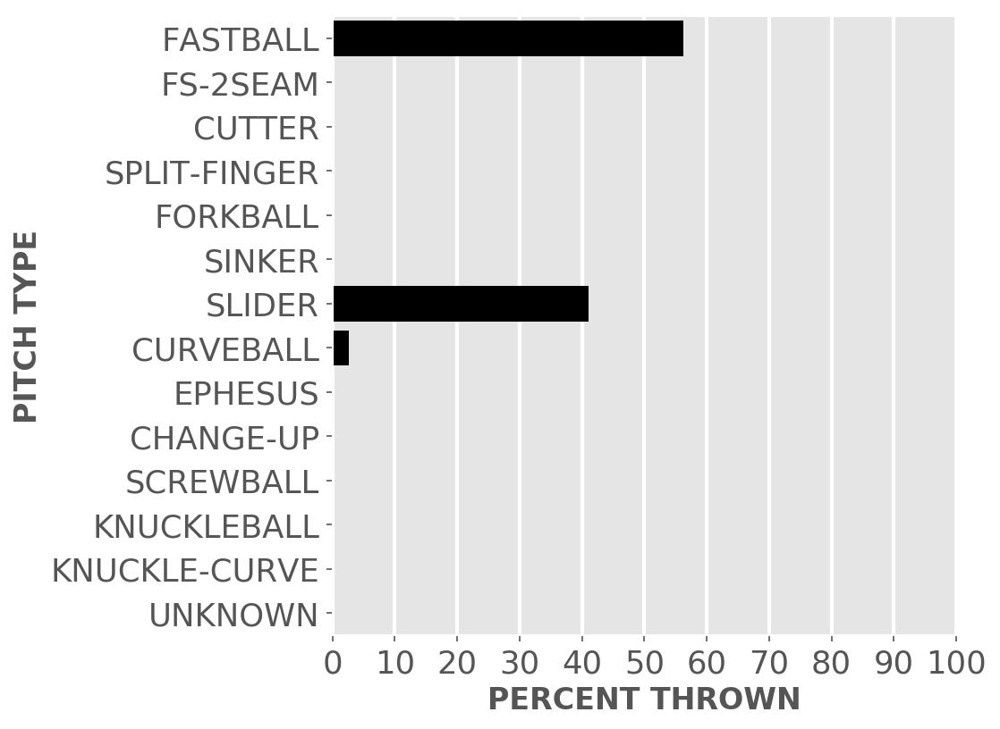
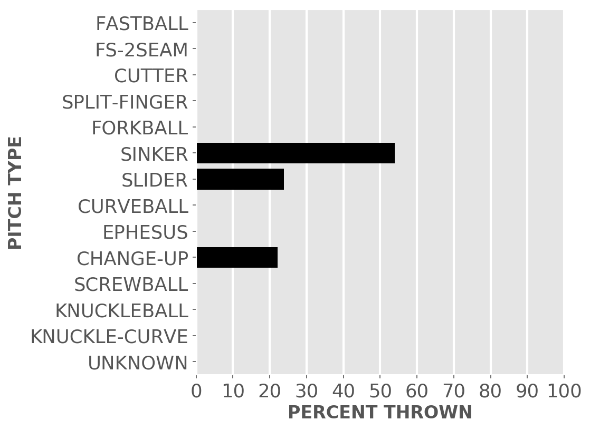
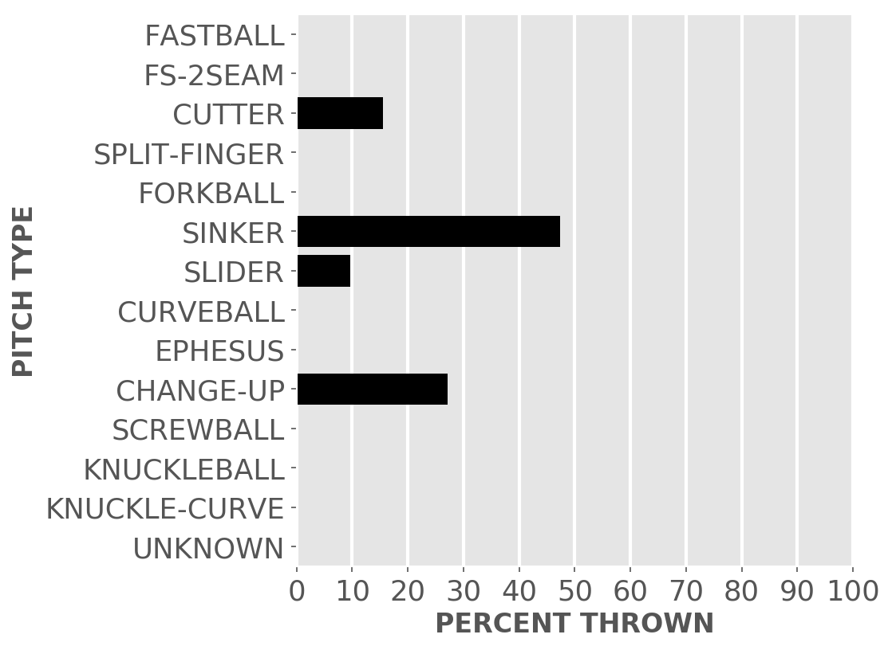
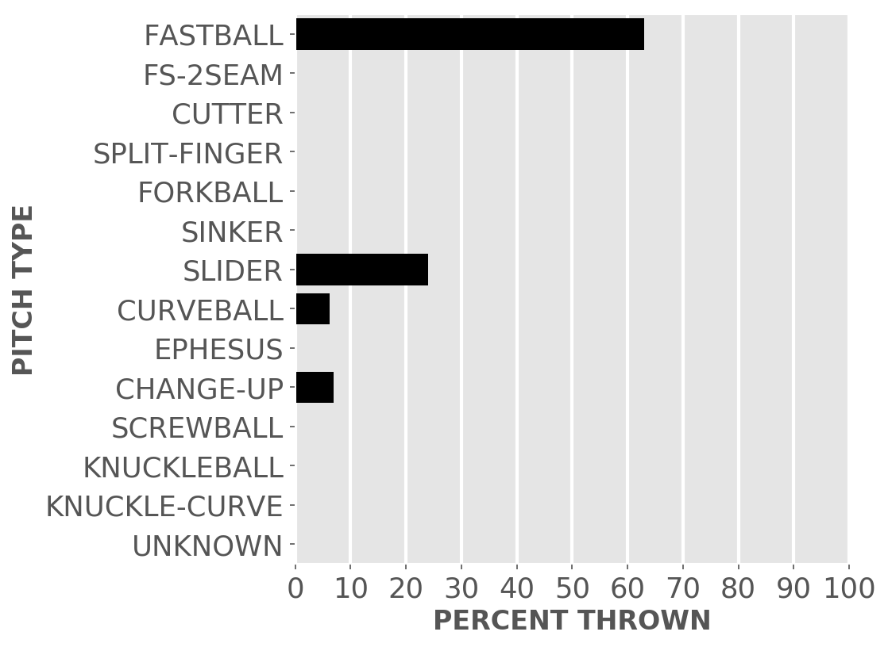

Chicago baseball
White Sox
A little-more-than-casual but not-very-wonky statistical look at the current season
Plenty of seats available to watch the kids learn how to play in the big league.
Updated Monday, April 12, at 8:58 a.m. Pybaseball gathers these from Baseball-reference.com.
Games
JUMP TO TOP | BATTERS | PITCHERS
On Sunday, Apr 11, the Sox lost a day game at home against the Royals, 3 to 4, in 10 innings. The winning pitcher was Holland, losing pitcher was Crochet. Save: Zimmer.
Next scheduled game: Monday, Apr 12, a game at home with the Indians.
Summary results by team
| Team | Wins | Loses | Avg. Sox runs | Avg. runs against |
|---|---|---|---|---|
| Angels | 1 | 3 | 5.5 | 6.0 |
| Mariners | 2 | 1 | 6.67 | 4.0 |
| Royals | 1 | 1 | 4.5 | 2.0 |
Batters
JUMP TO TOP | GAMES | PITCHERS
Click the link under a player's name to get up-to-speed on a player at bat.
Jose Abreu #79, 1B
| Status (A = active) | A |
| Bats/Throws | R/R |
| Plate appearances | 43 |
| At bats | 37 |
| Hits | 8 |
| Home runs | 2 |
| Batting Avg. | 0.216 |

| Runs | 5 |
| RBI | 9 |
| On-base percent | 0.302 |
| Weighted OBP | 0.308 |
| Slugging % | 0.405 |
| Stolen bases | 1 |
| Caught stealing | 0 |
Other measures
| Weighted runs above avg. (wRAA) | -0.1 |
| Runs Above Replacement (RAR) | 0.8 |
| Fielding RAR | |
| Wins above replacement (WAR) | 0.1 |
Tim Anderson #7, SS
| Status (A = active) | D10 |
| Bats/Throws | R/R |
| Plate appearances | 15 |
| At bats | 15 |
| Hits | 3 |
| Home runs | 1 |
| Batting Avg. | 0.2 |

| Runs | 3 |
| RBI | 1 |
| On-base percent | 0.2 |
| Weighted OBP | 0.255 |
| Slugging % | 0.4 |
| Stolen bases | 0 |
| Caught stealing | 0 |
Other measures
| Weighted runs above avg. (wRAA) | -0.7 |
| Runs Above Replacement (RAR) | -0.1 |
| Fielding RAR | |
| Wins above replacement (WAR) | 0.0 |
Zack Collins #21, C
| Status (A = active) | A |
| Bats/Throws | L/R |
| Plate appearances | 22 |
| At bats | 20 |
| Hits | 4 |
| Home runs | 1 |
| Batting Avg. | 0.2 |

| Runs | 2 |
| RBI | 5 |
| On-base percent | 0.273 |
| Weighted OBP | 0.294 |
| Slugging % | 0.4 |
| Stolen bases | 0 |
| Caught stealing | 0 |
Other measures
| Weighted runs above avg. (wRAA) | -0.3 |
| Runs Above Replacement (RAR) | 1.3 |
| Fielding RAR | 0.9 |
| Wins above replacement (WAR) | 0.1 |
Adam Eaton #12, RF
| Status (A = active) | A |
| Bats/Throws | L/L |
| Plate appearances | 36 |
| At bats | 31 |
| Hits | 8 |
| Home runs | 2 |
| Batting Avg. | 0.258 |

| Runs | 9 |
| RBI | 7 |
| On-base percent | 0.361 |
| Weighted OBP | 0.358 |
| Slugging % | 0.452 |
| Stolen bases | 1 |
| Caught stealing | 0 |
Other measures
| Weighted runs above avg. (wRAA) | 1.3 |
| Runs Above Replacement (RAR) | 2.4 |
| Fielding RAR | |
| Wins above replacement (WAR) | 0.2 |
Leury Garcia #28, OF
| Status (A = active) | A |
| Bats/Throws | S/R |
| Plate appearances | 26 |
| At bats | 25 |
| Hits | 3 |
| Home runs | 0 |
| Batting Avg. | 0.12 |

| Runs | 2 |
| RBI | 1 |
| On-base percent | 0.12 |
| Weighted OBP | 0.121 |
| Slugging % | 0.16 |
| Stolen bases | 1 |
| Caught stealing | 0 |
Other measures
| Weighted runs above avg. (wRAA) | -4.0 |
| Runs Above Replacement (RAR) | -2.9 |
| Fielding RAR | |
| Wins above replacement (WAR) | -0.3 |
Yasmani Grandal #24, C
| Status (A = active) | A |
| Bats/Throws | S/R |
| Plate appearances | 27 |
| At bats | 19 |
| Hits | 4 |
| Home runs | 1 |
| Batting Avg. | 0.211 |

| Runs | 5 |
| RBI | 6 |
| On-base percent | 0.444 |
| Weighted OBP | 0.394 |
| Slugging % | 0.421 |
| Stolen bases | 0 |
| Caught stealing | 0 |
Other measures
| Weighted runs above avg. (wRAA) | 1.8 |
| Runs Above Replacement (RAR) | 2.8 |
| Fielding RAR | -0.3 |
| Wins above replacement (WAR) | 0.3 |
Billy Hamilton #0, CF
| Status (A = active) | D10 |
| Bats/Throws | S/R |
| Plate appearances | 13 |
| At bats | 11 |
| Hits | 3 |
| Home runs | 0 |
| Batting Avg. | 0.273 |

| Runs | 2 |
| RBI | 1 |
| On-base percent | 0.385 |
| Weighted OBP | 0.312 |
| Slugging % | 0.273 |
| Stolen bases | 2 |
| Caught stealing | 0 |
Other measures
| Weighted runs above avg. (wRAA) | 0.0 |
| Runs Above Replacement (RAR) | 0.7 |
| Fielding RAR | |
| Wins above replacement (WAR) | 0.1 |
Jake Lamb #23, 3B
| Status (A = active) | A |
| Bats/Throws | L/R |
| Plate appearances | 5 |
| At bats | 2 |
| Hits | 0 |
| Home runs | 0 |
| Batting Avg. | 0.0 |

| Runs | 1 |
| RBI | 0 |
| On-base percent | 0.6 |
| Weighted OBP | 0.417 |
| Slugging % | 0.0 |
| Stolen bases | 0 |
| Caught stealing | 0 |
Other measures
| Weighted runs above avg. (wRAA) | 0.4 |
| Runs Above Replacement (RAR) | 0.6 |
| Fielding RAR | |
| Wins above replacement (WAR) | 0.1 |
Nick Madrigal #1, 2B
| Status (A = active) | A |
| Bats/Throws | R/R |
| Plate appearances | 34 |
| At bats | 29 |
| Hits | 7 |
| Home runs | 0 |
| Batting Avg. | 0.241 |

| Runs | 6 |
| RBI | 0 |
| On-base percent | 0.353 |
| Weighted OBP | 0.298 |
| Slugging % | 0.276 |
| Stolen bases | 1 |
| Caught stealing | 1 |
Other measures
| Weighted runs above avg. (wRAA) | -0.4 |
| Runs Above Replacement (RAR) | 0.6 |
| Fielding RAR | |
| Wins above replacement (WAR) | 0.1 |
Danny Mendick #20, SS
| Status (A = active) | A |
| Bats/Throws | R/R |
| Plate appearances | 12 |
| At bats | 8 |
| Hits | 4 |
| Home runs | 0 |
| Batting Avg. | 0.5 |

| Runs | 0 |
| RBI | 1 |
| On-base percent | 0.667 |
| Weighted OBP | 0.528 |
| Slugging % | 0.5 |
| Stolen bases | 0 |
| Caught stealing | 0 |
Other measures
| Weighted runs above avg. (wRAA) | 2.1 |
| Runs Above Replacement (RAR) | 2.6 |
| Fielding RAR | |
| Wins above replacement (WAR) | 0.3 |
Yermin Mercedes #73, C
| Status (A = active) | A |
| Bats/Throws | R/R |
| Plate appearances | 32 |
| At bats | 28 |
| Hits | 15 |
| Home runs | 2 |
| Batting Avg. | 0.536 |

| Runs | 5 |
| RBI | 7 |
| On-base percent | 0.594 |
| Weighted OBP | 0.61 |
| Slugging % | 0.857 |
| Stolen bases | 0 |
| Caught stealing | 0 |
Other measures
| Weighted runs above avg. (wRAA) | 7.7 |
| Runs Above Replacement (RAR) | 7.9 |
| Fielding RAR | |
| Wins above replacement (WAR) | 0.8 |
Yoan Moncada #10, 3B
| Status (A = active) | A |
| Bats/Throws | S/R |
| Plate appearances | 37 |
| At bats | 31 |
| Hits | 5 |
| Home runs | 1 |
| Batting Avg. | 0.161 |

| Runs | 4 |
| RBI | 2 |
| On-base percent | 0.297 |
| Weighted OBP | 0.275 |
| Slugging % | 0.29 |
| Stolen bases | 0 |
| Caught stealing | 0 |
Other measures
| Weighted runs above avg. (wRAA) | -1.1 |
| Runs Above Replacement (RAR) | 0.2 |
| Fielding RAR | |
| Wins above replacement (WAR) | 0.0 |
Luis Robert #88, CF
| Status (A = active) | A |
| Bats/Throws | R/R |
| Plate appearances | 41 |
| At bats | 36 |
| Hits | 9 |
| Home runs | 1 |
| Batting Avg. | 0.25 |

| Runs | 4 |
| RBI | 4 |
| On-base percent | 0.317 |
| Weighted OBP | 0.318 |
| Slugging % | 0.417 |
| Stolen bases | 1 |
| Caught stealing | 0 |
Other measures
| Weighted runs above avg. (wRAA) | 0.2 |
| Runs Above Replacement (RAR) | 1.8 |
| Fielding RAR | |
| Wins above replacement (WAR) | 0.2 |
Andrew Vaughn #25, 1B
| Status (A = active) | A |
| Bats/Throws | R/R |
| Plate appearances | 20 |
| At bats | 14 |
| Hits | 2 |
| Home runs | 0 |
| Batting Avg. | 0.143 |

| Runs | 2 |
| RBI | 1 |
| On-base percent | 0.4 |
| Weighted OBP | 0.318 |
| Slugging % | 0.214 |
| Stolen bases | 0 |
| Caught stealing | 0 |
Other measures
| Weighted runs above avg. (wRAA) | 0.1 |
| Runs Above Replacement (RAR) | 0.5 |
| Fielding RAR | |
| Wins above replacement (WAR) | 0.1 |
Nick Williams #5, OF
| Status (A = active) | A |
| Bats/Throws | L/L |
| Plate appearances | 5 |
| At bats | 4 |
| Hits | 0 |
| Home runs | 0 |
| Batting Avg. | 0.0 |

| Runs | 1 |
| RBI | 0 |
| On-base percent | 0.2 |
| Weighted OBP | 0.145 |
| Slugging % | 0.0 |
| Stolen bases | 0 |
| Caught stealing | 0 |
Other measures
| Weighted runs above avg. (wRAA) | -0.7 |
| Runs Above Replacement (RAR) | -0.7 |
| Fielding RAR | |
| Wins above replacement (WAR) | -0.1 |
Pitchers
Click the link under a player's name to get acquainted with who's on the mound. Click here for a description of these stats and more.
Aaron Bummer #39, P
| Status (A = active) | A |
| Bats/Throws | L/L |
| Wins | 0 |
| Losses | 1 |
| ERA | 3.0 |
| Caught stealing | 0 |
| Complete games | 0 |
| Shutouts | 0 |
| Saves | 0 |
| Blown saves | 1 |
Pitch types

Fastball = Four Seam and Unclassified Fastballs; FS-2seam = Two Seam Fastballs; Ephesuses are a really slow ball
| Average innings pitched | 0.8 |
| Strikeouts per 9 innings | 15.0 |
| Walks per 9 innings | 9.0 |
| Walks, hits per inning (WHIP) | 2.0 |
| Percent left on base | 57.1 |
| Percent first pitch strike | 23.5 |
Other measures
| Avg. run support | 0.0 |
| Opponents batting average | 0.231 |
| Batting avg. on balls in play | 0.375 |
| Fielding independent pitching | 3.82 |
| Win probability added (WPA) | -0.74 |
| Runs above replacement | 0.2 |
| WAR | 0.0 |
Dylan Cease #84, P
| Status (A = active) | A |
| Bats/Throws | R/R |
| Wins | 0 |
| Losses | 0 |
| ERA | 3.86 |
| Caught stealing | 2 |
| Complete games | 0 |
| Shutouts | 0 |
| Saves | 0 |
| Blown saves | 0 |
Pitch types

Fastball = Four Seam and Unclassified Fastballs; FS-2seam = Two Seam Fastballs; Ephesuses are a really slow ball
| Average innings pitched | 4.6 |
| Strikeouts per 9 innings | 8.68 |
| Walks per 9 innings | 5.79 |
| Walks, hits per inning (WHIP) | 1.61 |
| Percent left on base | 80.9 |
| Percent first pitch strike | 39.0 |
Other measures
| Avg. run support | 4.0 |
| Opponents batting average | 0.257 |
| Batting avg. on balls in play | 0.32 |
| Fielding independent pitching | 4.54 |
| Win probability added (WPA) | 0.02 |
| Runs above replacement | 0.7 |
| WAR | 0.1 |
Garrett Crochet #45, P
| Status (A = active) | A |
| Bats/Throws | L/L |
| Wins | 0 |
| Losses | 1 |
| ERA | 0.0 |
| Caught stealing | 0 |
| Complete games | 0 |
| Shutouts | 0 |
| Saves | 0 |
| Blown saves | 0 |
Pitch types

Fastball = Four Seam and Unclassified Fastballs; FS-2seam = Two Seam Fastballs; Ephesuses are a really slow ball
| Average innings pitched | 1.4 |
| Strikeouts per 9 innings | 12.46 |
| Walks per 9 innings | 4.15 |
| Walks, hits per inning (WHIP) | 0.69 |
| Percent left on base | 66.7 |
| Percent first pitch strike | 58.8 |
Other measures
| Avg. run support | 2.0 |
| Opponents batting average | 0.067 |
| Batting avg. on balls in play | 0.111 |
| Fielding independent pitching | 1.76 |
| Win probability added (WPA) | 0.28 |
| Runs above replacement | 2.1 |
| WAR | 0.2 |
Matt Foster #63, P
| Status (A = active) | A |
| Bats/Throws | R/R |
| Wins | 0 |
| Losses | 1 |
| ERA | 27.0 |
| Caught stealing | 0 |
| Complete games | 0 |
| Shutouts | 0 |
| Saves | 0 |
| Blown saves | 1 |
Pitch types

Fastball = Four Seam and Unclassified Fastballs; FS-2seam = Two Seam Fastballs; Ephesuses are a really slow ball
| Average innings pitched | 0.5 |
| Strikeouts per 9 innings | 19.29 |
| Walks per 9 innings | 7.71 |
| Walks, hits per inning (WHIP) | 3.43 |
| Percent left on base | 15.2 |
| Percent first pitch strike | 62.5 |
Other measures
| Avg. run support | 0.0 |
| Opponents batting average | 0.429 |
| Batting avg. on balls in play | 0.625 |
| Fielding independent pitching | 7.01 |
| Win probability added (WPA) | -0.89 |
| Runs above replacement | -1.1 |
| WAR | -0.1 |
Lucas Giolito #27, P
| Status (A = active) | A |
| Bats/Throws | R/R |
| Wins | 1 |
| Losses | 0 |
| ERA | 4.22 |
| Caught stealing | 2 |
| Complete games | 0 |
| Shutouts | 0 |
| Saves | 0 |
| Blown saves | 0 |
Pitch types

Fastball = Four Seam and Unclassified Fastballs; FS-2seam = Two Seam Fastballs; Ephesuses are a really slow ball
| Average innings pitched | 5.1 |
| Strikeouts per 9 innings | 15.19 |
| Walks per 9 innings | 2.53 |
| Walks, hits per inning (WHIP) | 0.84 |
| Percent left on base | 52.6 |
| Percent first pitch strike | 61.9 |
Other measures
| Avg. run support | 8.0 |
| Opponents batting average | 0.154 |
| Batting avg. on balls in play | 0.25 |
| Fielding independent pitching | 1.84 |
| Win probability added (WPA) | 0.07 |
| Runs above replacement | 4.2 |
| WAR | 0.5 |
Liam Hendriks #31, P
| Status (A = active) | A |
| Bats/Throws | R/R |
| Wins | 0 |
| Losses | 0 |
| ERA | 8.1 |
| Caught stealing | 0 |
| Complete games | 0 |
| Shutouts | 0 |
| Saves | 1 |
| Blown saves | 1 |
Pitch types
Fastball = Four Seam and Unclassified Fastballs; FS-2seam = Two Seam Fastballs; Ephesuses are a really slow ball
| Average innings pitched | 1.0 |
| Strikeouts per 9 innings | 13.5 |
| Walks per 9 innings | 2.7 |
| Walks, hits per inning (WHIP) | 1.5 |
| Percent left on base | 90.9 |
| Percent first pitch strike | 80.0 |
Other measures
| Avg. run support | 5.0 |
| Opponents batting average | 0.286 |
| Batting avg. on balls in play | 0.286 |
| Fielding independent pitching | 8.85 |
| Win probability added (WPA) | -0.06 |
| Runs above replacement | -2.9 |
| WAR | -0.3 |
Codi Heuer #65, P
| Status (A = active) | A |
| Bats/Throws | R/R |
| Wins | 0 |
| Losses | 0 |
| ERA | 2.08 |
| Caught stealing | 0 |
| Complete games | 0 |
| Shutouts | 0 |
| Saves | 0 |
| Blown saves | 0 |
Pitch types
Fastball = Four Seam and Unclassified Fastballs; FS-2seam = Two Seam Fastballs; Ephesuses are a really slow ball
| Average innings pitched | 1.0 |
| Strikeouts per 9 innings | 8.31 |
| Walks per 9 innings | 2.08 |
| Walks, hits per inning (WHIP) | 1.62 |
| Percent left on base | 100.0 |
| Percent first pitch strike | 44.4 |
Other measures
| Avg. run support | 6.0 |
| Opponents batting average | 0.353 |
| Batting avg. on balls in play | 0.417 |
| Fielding independent pitching | 5.0 |
| Win probability added (WPA) | 0.15 |
| Runs above replacement | -0.3 |
| WAR | 0.0 |
Dallas Keuchel #60, P
| Status (A = active) | A |
| Bats/Throws | L/L |
| Wins | 0 |
| Losses | 0 |
| ERA | 7.0 |
| Caught stealing | 2 |
| Complete games | 0 |
| Shutouts | 0 |
| Saves | 0 |
| Blown saves | 0 |
Pitch types
Fastball = Four Seam and Unclassified Fastballs; FS-2seam = Two Seam Fastballs; Ephesuses are a really slow ball
| Average innings pitched | 4.5 |
| Strikeouts per 9 innings | 7.0 |
| Walks per 9 innings | 5.0 |
| Walks, hits per inning (WHIP) | 1.67 |
| Percent left on base | 44.1 |
| Percent first pitch strike | 59.5 |
Other measures
| Avg. run support | 11.0 |
| Opponents batting average | 0.27 |
| Batting avg. on balls in play | 0.31 |
| Fielding independent pitching | 4.7 |
| Win probability added (WPA) | -0.22 |
| Runs above replacement | 0.7 |
| WAR | 0.1 |
Michael Kopech #34, P
| Status (A = active) | A |
| Bats/Throws | R/R |
| Wins | 1 |
| Losses | 0 |
| ERA | 0.0 |
| Caught stealing | 0 |
| Complete games | 0 |
| Shutouts | 0 |
| Saves | 0 |
| Blown saves | 0 |
Pitch types
Fastball = Four Seam and Unclassified Fastballs; FS-2seam = Two Seam Fastballs; Ephesuses are a really slow ball
| Average innings pitched | 2.0 |
| Strikeouts per 9 innings | 15.63 |
| Walks per 9 innings | 2.84 |
| Walks, hits per inning (WHIP) | 0.47 |
| Percent left on base | 100.0 |
| Percent first pitch strike | 54.5 |
Other measures
| Avg. run support | 0.0 |
| Opponents batting average | 0.05 |
| Batting avg. on balls in play | 0.111 |
| Fielding independent pitching | 0.62 |
| Win probability added (WPA) | 0.35 |
| Runs above replacement | 3.3 |
| WAR | 0.4 |
Lance Lynn #33, P
| Status (A = active) | A |
| Bats/Throws | S/R |
| Wins | 1 |
| Losses | 0 |
| ERA | 0.0 |
| Caught stealing | 2 |
| Complete games | 1 |
| Shutouts | 1 |
| Saves | 0 |
| Blown saves | 0 |
Pitch types

Fastball = Four Seam and Unclassified Fastballs; FS-2seam = Two Seam Fastballs; Ephesuses are a really slow ball
| Average innings pitched | 6.6 |
| Strikeouts per 9 innings | 11.2 |
| Walks per 9 innings | 1.32 |
| Walks, hits per inning (WHIP) | 0.95 |
| Percent left on base | 84.6 |
| Percent first pitch strike | 72.2 |
Other measures
| Avg. run support | 8.0 |
| Opponents batting average | 0.212 |
| Batting avg. on balls in play | 0.314 |
| Fielding independent pitching | 1.1 |
| Win probability added (WPA) | 0.24 |
| Runs above replacement | 6.1 |
| WAR | 0.7 |
Evan Marshall #43, P
| Status (A = active) | A |
| Bats/Throws | R/R |
| Wins | 0 |
| Losses | 1 |
| ERA | 9.82 |
| Caught stealing | 0 |
| Complete games | 0 |
| Shutouts | 0 |
| Saves | 0 |
| Blown saves | 1 |
Pitch types

Fastball = Four Seam and Unclassified Fastballs; FS-2seam = Two Seam Fastballs; Ephesuses are a really slow ball
| Average innings pitched | 1.1 |
| Strikeouts per 9 innings | 7.36 |
| Walks per 9 innings | 4.91 |
| Walks, hits per inning (WHIP) | 2.18 |
| Percent left on base | 60.6 |
| Percent first pitch strike | 36.8 |
Other measures
| Avg. run support | 0.0 |
| Opponents batting average | 0.353 |
| Batting avg. on balls in play | 0.385 |
| Fielding independent pitching | 6.69 |
| Win probability added (WPA) | -0.49 |
| Runs above replacement | -1.5 |
| WAR | -0.1 |
Carlos Rodon #55, P
| Status (A = active) | A |
| Bats/Throws | L/L |
| Wins | 1 |
| Losses | 0 |
| ERA | 0.0 |
| Caught stealing | 1 |
| Complete games | 0 |
| Shutouts | 0 |
| Saves | 0 |
| Blown saves | 0 |
Pitch types

Fastball = Four Seam and Unclassified Fastballs; FS-2seam = Two Seam Fastballs; Ephesuses are a really slow ball
| Average innings pitched | 5.0 |
| Strikeouts per 9 innings | 16.2 |
| Walks per 9 innings | 5.4 |
| Walks, hits per inning (WHIP) | 1.0 |
| Percent left on base | 100.0 |
| Percent first pitch strike | 45.5 |
Other measures
| Avg. run support | 6.0 |
| Opponents batting average | 0.118 |
| Batting avg. on balls in play | 0.25 |
| Fielding independent pitching | 2.55 |
| Win probability added (WPA) | 0.22 |
| Runs above replacement | 1.4 |
| WAR | 0.2 |
Jose Ruiz #66, P
| Status (A = active) | A |
| Bats/Throws | R/R |
| Wins | 0 |
| Losses | 1 |
| ERA | 2.7 |
| Caught stealing | 0 |
| Complete games | 0 |
| Shutouts | 0 |
| Saves | 0 |
| Blown saves | 0 |
Pitch types

Fastball = Four Seam and Unclassified Fastballs; FS-2seam = Two Seam Fastballs; Ephesuses are a really slow ball
| Average innings pitched | 1.0 |
| Strikeouts per 9 innings | 2.7 |
| Walks per 9 innings | 0.0 |
| Walks, hits per inning (WHIP) | 0.3 |
| Percent left on base | 0.0 |
| Percent first pitch strike | 72.7 |
Other measures
| Avg. run support | 1.0 |
| Opponents batting average | 0.091 |
| Batting avg. on balls in play | 0.1 |
| Fielding independent pitching | 2.55 |
| Win probability added (WPA) | -0.03 |
| Runs above replacement | 0.5 |
| WAR | 0.1 |
JUMP TO TOP